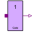
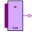
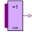
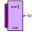
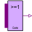
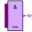
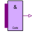
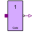

DelayParamsDefinition of delay parameters |
This information is part of the Modelica Standard Library maintained by the Modelica Association.
DelayParams is a partial model for providing delay times and inertial values. It is used in components of the package Gates which need the same parameters. The partial model does not have any behavior or equations.
|  |
Modelica.Electrical.Digital.Gates BufGate with 1 input value, composed by Not and sensitive inertial delay |
|  |
Modelica.Electrical.Digital.Gates XnorGate with multiple input |
|  |
Modelica.Electrical.Digital.Gates XorGate with multiple input |
|  |
Modelica.Electrical.Digital.Gates NorGate with multiple input |
|  |
Modelica.Electrical.Digital.Gates OrGate with multiple input |
|  |
Modelica.Electrical.Digital.Gates NandGate with multiple input |
|  |
Modelica.Electrical.Digital.Gates AndGate with multiple input |
|  |
Modelica.Electrical.Digital.Gates InvGate with 1 input value, composed by Not and sensitive inertial delay |